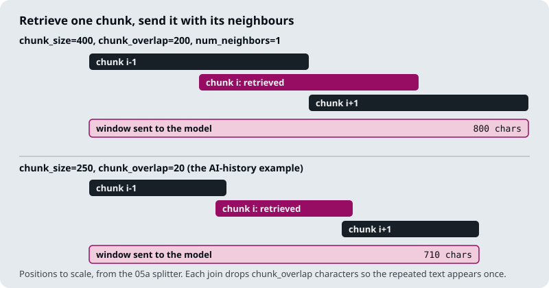
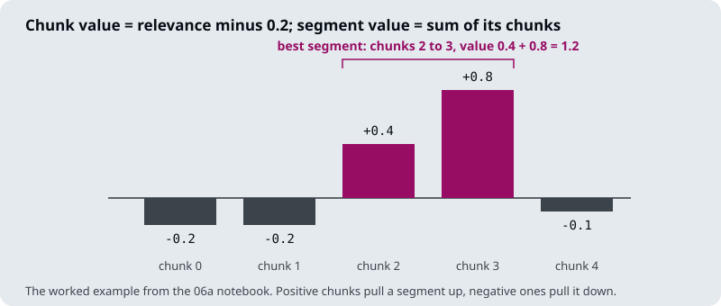

The running example is the Larkspur Cloud handbook from M11 to M13, and two of its golden questions: Can I export my data after I cancel my plan? (evidence: the export and retention chunks) and How long does a refund take? (evidence: refund-window and refund-timing). The first has a distractor that shares its words, the cancel chunk, which is the kind of near miss a reranker is for.
TL;DR
- Retrieval runs in two stages. A bi-encoder (with BM25 alongside it in the M17 hybrid) scores every chunk and returns a wide candidate list; a cross-encoder or an LLM reads each question and candidate together and reorders the list. Stage 1 is judged on recall at depth 50, stage 2 on precision in the top 5.
- The reranker only reorders what stage 1 returned. Evidence missing from the candidates stays missing, so recall at the first-stage depth caps everything after it.
- Reranking cost grows with the number of candidates. A cross-encoder runs one forward pass per question and chunk pair; the pointwise LLM reranker in
03a_reranking_methods.ipynbmakes onegpt-4ocall per candidate, up to 30 per question in its custom retriever. - Models use the start and end of a long prompt more reliably than the middle. Send a few chunks in rank order, best first, rather than a long list in retrieval order.
- After reranking, the context budget decides the shape of each chunk: compress it to the sentences that answer the question, or expand it to its neighbours when the answer runs across a boundary.
Mental model
- A customer asks “Can I export my data after I cancel my plan?”
- Stage 1 scores every chunk in the index and returns 50 candidates. The two evidence chunks are in the list, but not at the top.
- Stage 2 reads the question and each candidate together: 50 pairs, one cross-encoder pass each.
- The candidates are sorted by the new scores. The two evidence chunks, export and retention, move to the top, and the cut keeps 5.
- Each kept chunk is compressed to the sentences that answer, or expanded to its neighbours, within the context budget.
- The model reads the five chunks, best first, and answers with citations to the evidence.
Each stage has its own metric and its own failure. Stage 1 fails when the evidence is not among the candidates, stage 2 fails when the evidence is a candidate but does not reach the top 5, and the last step fails when the evidence reaches the prompt cut short or buried. Debug them in that order.
Recall@50 → precision@5
Lesson 19.1: Two-stage retrieval: retrieve wide, rerank narrow. Notebooks: 01a_two_stage_reranking.ipynb
Two-stage retrieval gives each stage one job and one metric. The notebook’s version: FAISS with all-MiniLM-L6-v2 embeddings returns k=8 chunks, then llama-3.1-8b-instant reads all eight in one prompt and returns their indices in order of relevance. The notebook calls this “retrieve many, keep few”. The lab brief for this module scales it to the production shape: 50 candidates from a hybrid first stage, 5 chunks to the model. The lab below keeps the first stage dense only, so its numbers isolate the reranker.
| Stage | Job | Metric | Cost per question |
|---|---|---|---|
| 1. Retrieve wide | Get the evidence somewhere into the candidate list | Recall@50 | One query embedding and an index lookup, nearly the same at any depth |
| 2. Rerank narrow | Put the evidence at the top and cut the rest | Precision@5 | One reranker pass per candidate: 50 pairs at depth 50 |
The arrow in the heading is a ceiling. The top 5 after reranking is a subset of the top 50 before it, so recall@5 after the rerank can never exceed recall@50 before it. A reranker reorders; it cannot fetch. When the retention chunk is not among the 50 candidates for Can I export my data after I cancel my plan?, the answer misses the 30-day deletion rule however good the reranker is.
Depth pulls in two directions. Recall@k never falls as k grows, because a deeper list contains the shallower one. The rerank cost rises with every candidate. The notebooks in this module sit at the shallow end:
| Notebook | First stage returns | Reranker | Keeps |
|---|---|---|---|
01a_two_stage_reranking |
8 (FAISS) | LLM, one listwise call | all 8, reordered |
02a_cross_encoder_reranking |
LangChain’s default k (Chroma) |
BAAI/bge-reranker-base |
3 |
02b_reranking_cross_encoder_walkthrough (optional) |
10 (Chroma) | cross-encoder/ms-marco-MiniLM-L-6-v2 |
all 10, reordered |
03a_reranking_methods, LLM |
15, or 30 in the custom retriever | gpt-4o, one call per chunk |
3, or 2 |
03a_reranking_methods, cross-encoder |
10 | cross-encoder/ms-marco-MiniLM-L-6-v2 |
5 |
To pick the depth for your own corpus, plot stage-1 recall@k on the golden set and find where it flattens. Past that point a deeper list only adds rerank latency. The interactive lab puts the three numbers side by side on a 100-chunk Larkspur handbook. Stage 1 is dense only (all-MiniLM-L6-v2); the rerankers are cross-encoder/ms-marco-MiniLM-L-6-v2 and BAAI/bge-reranker-v2-m3, all real scores. On the outage question with no reranker, the two SLA chunks sit at ranks 9 and 11, so precision@5 is 0.20. At k = 20 the bge reranker lifts them to ranks 3 and 2 and precision@5 rises to 0.60, for about 623 ms of CPU time. At k = 10 one SLA chunk is outside the candidates and precision@5 stops at 0.40. The PostgreSQL question shows the same ceiling at every depth: one evidence chunk sits at stage-1 rank 52, past any k the lab offers, so the fix belongs in stage 1.
When an answer is wrong, the two metrics tell you which stage to fix. Ask the questions in order:
flowchart TD
A{"Evidence in the<br/>top 50?"} -- no --> F1["Fix stage 1<br/>hybrid search (M17)<br/>query rewriting (M18)"]
A -- yes --> B{"Evidence in the top 5<br/>after the rerank?"}
B -- no --> F2["Fix stage 2<br/>reranker model<br/>input truncation"]
B -- yes --> C{"Answer uses<br/>the evidence?"}
C -- no --> F3["Fix the context<br/>order and budget<br/>(19.4 to 19.6)"]
C -- yes --> OK["Stages agree;<br/>check the prompt"]
Lost in the middle
Liu et al. (Lost in the Middle: How Language Models Use Long Contexts, 2023) gave models a question with many retrieved passages and moved the one that held the answer through the list. Accuracy was highest with the answer near the start or the end of the context and lowest with it in the middle. M11 met the same effect when it raised k.
For a RAG pipeline the finding has three consequences:
- Send fewer chunks. With five chunks there is little middle to get lost in. If stage 1 returns 20 chunks for the export question and
retentionsits at position 11, it is in the part of the prompt the model reads least reliably. - Send them in rank order, best first. The notebook’s last step does this: it rebuilds the list from the LLM’s ranking so the chunk it judged most relevant leads the prompt.
- If you must send many, put the strongest at the edges. LangChain’s
LongContextReorderdocument transformer places the highest-ranked documents at the start and the end and the weakest in the middle. The M19 notebooks do not use it; reranking and a small cut usually make it unnecessary.
The notebook’s own list of when to rerank makes the same point from the other side: when only the top 3 chunks are used, or when the context window is limited and needs the best documents.
Bi-encoder vs cross-encoder
Lesson 19.2: Cross-encoder reranking in a RAG chain. Notebooks: 02a_cross_encoder_reranking.ipynb, 02b_reranking_cross_encoder_walkthrough.ipynb (optional)
Both models read text with a transformer encoder. They differ in what goes into the encoder together.
flowchart TD
subgraph bi["Bi-encoder: stage 1"]
direction LR
BQ[/Question/] --> BE["Encoder<br/>question alone"] --> BS["Cosine with chunk<br/>vectors stored at<br/>index time"]
end
subgraph ce["Cross-encoder: stage 2"]
direction LR
CQ["Question + chunk<br/>as one input"] --> CE["Encoder<br/>attends across both"] --> CS["One relevance<br/>score per pair"]
end
BS ~~~ CQ
A bi-encoder turns the question and each chunk into vectors separately and compares them with cosine similarity. The chunk vectors are computed once, when the index is built, so answering a question costs one embedding and a nearest-neighbour search however large the index is. Lesson 19.1’s first stage uses all-MiniLM-L6-v2, which the notebook describes as about 22M parameters with 384-dimensional vectors. The price is that each chunk is summarised into one vector before any question exists. The cancel chunk (“You can cancel any plan from the Billing page…”) and the retention chunk (“After a plan is cancelled, its data is kept for 30 days…”) both share words with Can I export my data after I cancel my plan?. One vector per chunk has to serve every question, so the bi-encoder can place cancel as close to the question as retention, though only retention answers it.
A cross-encoder reads the question and one chunk as a single input, so every question token can attend to every chunk token, and it outputs one relevance score. It can tell that only retention says what happens to the data. Nothing can be computed ahead of time, because the input depends on the question: scoring 50 candidates means 50 forward passes. That is why it runs only on the short list.
| Bi-encoder | Cross-encoder | |
|---|---|---|
| Input | Question or chunk, alone | Question and chunk together |
| Output | A vector | A relevance score |
| Work at index time | Embed every chunk once | None |
| Work per question | One embedding, one index search | One forward pass per candidate |
| Used for | Stage 1 over the whole index | Stage 2 over the candidates |
| In these notebooks | all-MiniLM-L6-v2, OpenAIEmbeddings |
BAAI/bge-reranker-base, cross-encoder/ms-marco-MiniLM-L-6-v2; Cohere’s hosted rerank-english-v3.0 in 19.6 |
The two notebooks wire the cross-encoder into a chain in different ways:
02auses LangChain’s wrapper.HuggingFaceCrossEncoderloadsBAAI/bge-reranker-base,CrossEncoderReranker(top_n=3)scores and cuts, andContextualCompressionRetrieverruns it after the base retriever. In LangChain a reranker is a document compressor: it takes the retrieved documents and the question and returns fewer documents. Lesson 19.4 plugs an extractor into the same slot.02bwrites the step by hand. It builds(question, chunk)pairs, callsCrossEncoder.predicton the list, sorts by score and puts the result into the chain withRunnableLambda.
Three details in that code matter in production:
02a’s base retriever keeps LangChain’s defaultk, so the reranker chooses 3 from a list barely longer than 3. Raisekthroughsearch_kwargsuntil stage 1 recall flattens (19.1).02b’srerank_documentscreates theCrossEncoderinside the function, so the model loads again on every question. Load it once at start-up.02b’s chain version returns all 10 reranked chunks, so it reorders without narrowing. Slice the sorted list to the top few, as its earlier cell does with[0:2].
Cross-encoder scores rank the candidates for one question. Nothing guarantees that a score means the same thing across questions or across models. The 19.6 notebook notes that Cohere’s reranker returns values “very close to 0 or 1” and spreads them with a beta transform before using them. Before you set a fixed score threshold, check its distribution on your golden set.
LLM reranker or cross-encoder
Lesson 19.3: LLM reranking vs cross-encoder reranking. Notebooks: 03a_reranking_methods.ipynb
An LLM can rerank in two ways, and this module shows both. Lesson 19.1’s notebook is listwise: one prompt holds all eight numbered candidates and asks for “comma-separated document indices” from most to least relevant. This lesson’s notebook is pointwise: rerank_documents asks gpt-4o (temperature 0) to rate one document “on a scale of 1-10”, reads the number through structured output (RatingScore.relevance_score), repeats for every candidate, then sorts and keeps top_n=3. The same notebook’s CrossEncoderRetriever retrieves 10 and keeps 5 after one predict call over the 10 pairs with cross-encoder/ms-marco-MiniLM-L-6-v2.
| Listwise LLM (19.1) | Pointwise LLM (19.3) | Cross-encoder (19.2, 19.3) | |
|---|---|---|---|
| Calls per question | 1, holding every candidate | 1 per candidate: 15 in the example, up to 30 in CustomRetriever |
1 batched predict over all pairs |
| Runs on | A hosted LLM | A hosted LLM | Your own CPU or GPU |
| Output | Text to parse into an order | A score from 1 to 10 per chunk | A score per pair |
| Sees other candidates | Yes | No | No |
| Fails by | Dropping or repeating indices | Ties on a 10-point scale, slow sequential calls | Truncating chunks longer than its input limit |
Each failure shows up in the notebook code:
- Listwise parsing drops documents. The 19.1 parser keeps only tokens that are digits, then rebuilds the list from them. A chunk the LLM leaves out of its answer disappears from the result, and nothing reports it. Check that the returned indices are a permutation of the inputs, and append any missing ones at the end.
- Pointwise scores tie. If the model answers in whole numbers, 15 candidates on a 10-point scale must include ties. Python’s sort is stable, so ties keep their stage-1 order, and the reranker decides less than it appears to.
- Pointwise latency adds up. The loop calls the model once per document, one after another. Thirty sequential calls take about thirty times the latency of one
gpt-4orequest. Run them in parallel, or score fewer candidates.
The notebook’s last example builds a corpus of five chunks to show why reranking helps. Three are short sentences that repeat the question’s words without naming the city (“The capital of France is great.”), and two are longer passages about visiting Paris. compare_rag_techniques prints the top 2 by plain similarity next to the top 2 from the LLM reranker. The notebook does not save its outputs, so run it to see which chunks each method picks.
For Larkspur’s support assistant the choice comes down to traffic and stakes. A cross-encoder runs locally with no per-call fee and no parsing step to fail, so it is the default second stage. An LLM reranker earns its cost on low-volume, high-stakes questions where it can follow an instruction a cross-encoder cannot, such as “prefer the current policy over the archived one”. A middle path is to let the cross-encoder cut 50 to 10 and the LLM order the last 10. Whichever you pick, compare them on golden-set precision@5 and p95 latency together.
Context budget
Lesson 19.4: Contextual compression. Notebooks: 04a_contextual_compression.ipynb
The context budget is the share of each prompt that retrieved text may take. Four things set it: the model’s context window, the cost of input tokens, the latency of reading them, and the position effect from 19.1, which makes a long context less reliable than a short one. Every step after retrieval either saves from that budget or spends it:
| Step | Lesson | Effect on the budget | What it costs |
|---|---|---|---|
| Cut to the top few after reranking | 19.1 to 19.3 | Saves: fewer chunks | Rerank latency |
| Drop chunks that do not answer | 02b (optional) | Saves: whole chunks | One LLM call per chunk |
| Extract the relevant sentences | 19.4 | Saves: shorter chunks | One LLM call per chunk |
| Add the neighbouring chunks | 19.5 | Spends: 800 characters per hit at the 05a settings, twice the chunk | A lookup per neighbour |
| Rebuild contiguous segments | 19.6 | Spends: up to 30 chunks of 800 characters, 24,000 characters, at the 06a settings | A reranker pass over the document’s chunks |
Saving and spending go together. A pipeline that expands each hit to its neighbours can afford it by keeping three chunks instead of five; one that compresses each chunk can keep more of them.
04a saves with LLMChainExtractor. It wraps gpt-4o-mini (temperature 0, max_tokens=4000) and plugs into ContextualCompressionRetriever, the same wrapper 19.2 used for the cross-encoder. For each retrieved chunk the extractor asks the LLM to copy out only the parts that bear on the question; a chunk with nothing relevant comes back empty and is dropped. A RetrievalQA chain then answers from what is left.
flowchart LR
R["Base retriever<br/>top k chunks"] --> S{"Compressor<br/>slot"}
S -- rerank --> A["CrossEncoderReranker<br/>fewer chunks, reordered<br/>(19.2)"]
S -- extract --> B["LLMChainExtractor<br/>shorter chunks<br/>(19.4)"]
S -- filter --> C["Yes or no per chunk<br/>whole chunks dropped<br/>(02b)"]
Whichever compressor fills the slot, its output is what the prompt receives. The retriever and the chain stay the same.
Compression has the same risk as M13’s propositions: an LLM sits between the source and the prompt. On the Larkspur refund-window chunk, an extractor that keeps “An annual plan can get a full refund within 30 days of purchase” and drops “if the account used less than 100 GB of outbound traffic” produces a confident wrong answer. Check compressed context for faithfulness on the golden set, and keep each chunk’s id so the citation points at the full source text.
Filtering has a simpler failure. The optional 02b notebook’s evaluate_documents asks gpt-4o-mini whether each chunk suits the question and keeps it only if the reply equals the string "True" exactly. A reply of "True." drops the chunk. Ask for structured output, as 19.3’s pointwise reranker does, instead of matching text.
Enrichment windows
Lesson 19.5: Context enrichment windows. Notebooks: 05a_context_enrichment_window.ipynb
Small chunks retrieve precisely and large chunks answer completely (M13). An enrichment window keeps both: index small chunks, and when one is retrieved, send it to the model together with the chunks on either side of it.
The notebook splits the text into fixed-size character chunks with split_text_to_chunks_with_indices and stores each chunk’s position in its metadata as index. The retriever returns k=1 chunk. retrieve_with_context_overlap then fetches the chunks at index - 1 to index + 1 (num_neighbors=1), sorts them by position and joins them, dropping chunk_overlap characters at each join so the repeated text appears once.

The window length follows from the split. Neighbouring chunks start chunk_size - chunk_overlap characters apart, so a window of three chunks covers 2 × (chunk_size - chunk_overlap) + chunk_size characters:
| Example in the notebook | Split | Retrieved chunk | Window | Growth |
|---|---|---|---|---|
| Climate change PDF | 400 / 200 | 400 characters | 800 characters | 2× |
| AI-history passage, When did deep learning become prominent in AI? | 250 / 20 | 250 characters | 710 characters | 2.84× |
The more the chunks already overlap, the less the window adds. Either way the growth comes out of the context budget (19.4), so a pipeline that widens each hit usually keeps fewer hits.
On the Larkspur handbook the window repairs M13’s boundary cut. M13’s 300-character split ends chunk 2 of the refund section at “used less than” and starts chunk 3 with the 100 GB condition; a window around chunk 2 sends both halves of the rule.
The notebook’s helpers are written for a demo, and four of their shortcuts break in production:
- The join needs the split’s overlap.
retrieve_with_context_overlaptakeschunk_overlapas its own argument. If it differs from the overlap used to split, the joins repeat or delete text. The AI-history call relies on the default of 20 matching its split. - Fetching a neighbour scans the whole store.
get_chunk_by_indexrunssimilarity_search("", k=vectorstore.index.ntotal)and loops over every chunk to find one index; the notebook calls it a simplified version. Keep chunk text in a key-value store keyed by document id and chunk index, which 19.6’s method requires anyway. - Every chunk carries the whole document. The splitter stores the full text in each chunk’s metadata under
text, so the index holds one copy of the document per chunk. - Indexes restart per document. With more than one document, the key must include the document id, or a window can join the end of one file to the start of another. Two hits next to each other also produce overlapping windows; merge them, which is the problem 19.6 solves in general.
Relevant segment extraction
Lesson 19.6: Relevant segment extraction. Notebooks: 06a_relevant_segment_extraction.ipynb (optional)
An enrichment window (19.5) grows every hit by a fixed amount. Relevant segment extraction (RSE) lets the reranker’s scores decide how much to send. It rests on one observation from the notebook: “relevant chunks tend to be clustered within their original documents”. RSE finds those clusters and sends each one as a single contiguous segment, in document order, including chunks between two relevant ones that the reranker scored low.
The notebook’s pipeline, on Nike’s 2023 annual report:
- Chunk with no overlap.
RecursiveCharacterTextSplitter(chunk_size=800, chunk_overlap=0). Without overlap, joining neighbouring chunks rebuilds the original text exactly. - Score every chunk. Cohere’s
rerank-english-v3.0scores each chunk against Nike consolidated financial statements. The scores cluster near 0 and 1, so a beta CDF (a = b = 0.4) spreads them out, and each is multiplied byexp(-rank / 30)so that rank counts as well as score. - Subtract a penalty.
irrelevant_chunk_penalty = 0.2makes irrelevant chunks negative and relevant ones positive. - Find the best segments. A segment’s value is the sum of its chunk values, so finding the best one is a constrained maximum-sum subarray problem.
get_best_segmentssearches by brute force withmax_length=20chunks per segment,overall_max_length=30chunks in total andminimum_value=0.7, and repeats until no segment clears the minimum.

The notebook’s own worked example has five chunks with values [-0.2, -0.2, 0.4, 0.8, -0.1]. Running get_best_segments on them returns chunks 2 to 3 with a value of 1.2. Extending to chunk 4 would subtract 0.1, and no other run of chunks has a positive sum, so the search stops after one segment.
On the annual report the notebook reads the chunks around the cluster. Only 7 of chunks 320 to 339 were marked relevant, yet chunks 323 to 333 all hold the consolidated financial statements; the optimiser’s first segment is 323 to 336. The chunks the reranker scored low would have been left out by top-k retrieval; the segment brings them back.
When only one chunk is relevant, there is no cluster to join, and RSE returns that chunk on its own. It behaves like top-k retrieval on factoid questions and like a large chunk on broad ones, without fixing the chunk size in advance.
The notebook reports its authors’ evaluation on their KITE benchmark (50 questions across four datasets, graded 0 to 10 by an LLM), comparing RSE with top-k retrieval at k=20 with the Cohere reranker and gpt-4o in both:
| Dataset | Top-k | RSE |
|---|---|---|
| AI Papers | 4.5 | 7.9 |
| BVP Cloud 10-Ks | 2.6 | 4.4 |
| Sourcegraph handbook | 5.7 | 6.6 |
| Supreme Court opinions | 6.1 | 8.0 |
| Average | 4.72 | 6.73 |
These are the authors’ numbers, not a measurement in this course. The notebook reports the context length as roughly equal in both configurations, so the gain does not come from sending more text.
RSE spends the context budget (19.4) in a bounded way: at the notebook’s settings, at most 30 chunks of 800 characters, 24,000 characters in all. For the Larkspur handbook the sections are short, so set max_length to a section’s chunk count and the overall cap to what the generation prompt can hold.
Interactive lab
Rerank precision lab: open the file in a browser. It ranks a 100-chunk handbook with all-MiniLM-L6-v2, reranks with two real cross-encoders, and prints rerank latency measured on a laptop CPU.
- On the outage question, switch the reranker from Off to
bge-reranker-v2-m3atk = 20. The two SLA chunks climb from ranks 9 and 11 into the top three, and precision@5 goes from 0.20 to 0.60 for about 623 ms. - Drop
kto 10 with the reranker on. One SLA chunk falls outside the candidates and precision@5 stops at 0.40, because no reranker can return a chunk the first stage never retrieved. - Switch to MiniLM-L6. It costs 39 ms at
k = 20instead of 623 ms and gains nothing on these questions. Measure a reranker on your golden set before you pay for it.
How it connects
- Before: M11 defines recall@k and precision@k and the baseline every change is measured against. M13 sets the chunk size that compression and enrichment windows work around. M14 covers the embedding models that stage 1 runs as bi-encoders. M17 builds the hybrid first stage, and M18 rewrites the question before it reaches it.
- Next: M20 assembles the full pipeline with sources and citations on top of these stages. M28 and M29 add an LLM grader that judges each retrieved chunk, the same pointwise judgement as the LLM reranker in 19.3, with a yes or no instead of a score.
Interview Spotlight: 5 Questions You Might Get Asked
Production questions in the style of OpenAI, Anthropic and Google interviews for applied AI roles.
1. You add a cross-encoder reranker over the top 50 for Larkspur’s support assistant. Latency per question jumps, and answers to “How long does a refund take?” are no better. Where do you look?
What a strong answer covers:
- Checks recall@50 first: if
refund-timingis not among the 50 candidates, no reranker can promote it, and the fix belongs in stage 1 (hybrid search in M17, query rewriting in M18) - Profiles the rerank step: model loaded once at start-up rather than per request (the walkthrough notebook builds its
CrossEncoderinside the rerank function), pairs scored in one batch, long chunks truncated to the model’s input limit - Compares precision@5 with and without the reranker on the golden set, per question, so one regression is not hidden in the mean
- Lowers the depth to where recall@k stops rising, which cuts the pair count and the latency with it
2. The team wants the best possible ranking for a high-traffic support chat and proposes an LLM reranker. What do you recommend?
What a strong answer covers:
- Pointwise LLM reranking costs one call per candidate (up to 30 calls per question in the 19.3 notebook); listwise costs one long call whose output must be parsed back into an order
- A cross-encoder scores every pair locally in one batch, with no parsing step that can fail
- Default to the cross-encoder and reserve the LLM for low-volume, high-stakes questions, or for re-scoring only the top few after the cross-encoder
- Decides on golden-set precision@5 and p95 latency together, not on a demo query
3. How do you choose the first-stage depth: 20, 50 or 100 candidates?
What a strong answer covers:
- Plots recall@k for stage 1 on the golden set and finds where it flattens
- Measures rerank latency at each depth, since cross-encoder cost is one pass per pair
- Picks the shallowest depth on the flat part of the recall curve that fits the latency budget
- Re-checks when the corpus grows or the embedding model changes, because the curve moves
4. “Can a refund be prorated after 45 days?” The reranker puts the refund-window chunk first, but the sentence with the proration rule sits in the next chunk and never reaches the model. What do you change?
What a strong answer covers:
- Recognises a boundary problem: the ranking is right and the unit of context is too small
- Expands each top chunk to its neighbours (19.5) or extracts a contiguous segment (19.6), using a key-value lookup by document and chunk index
- Accounts for the extra tokens in the context budget, for example by keeping fewer chunks
- Checks that compression (19.4) is not the step dropping the qualifier, since an extractor can cut the condition from a rule
5. The reranker has run in production for a month. How do you show it is still earning its latency?
What a strong answer covers:
- Logs, for every answer, the stage-1 rank and the reranked rank of each cited chunk
- Tracks how often a cited chunk came from below the top 5 of stage 1, which is the work only the reranker did
- Re-runs the golden set on every change to the index, the embedding model or the reranker version, and alerts on a fall in precision@5
- Watches rerank latency percentiles separately from generation latency
Key Takeaways
- Judge stage 1 on recall at its depth and stage 2 on precision at the cut. A reranker cannot fix a candidate list that lacks the evidence.
- Reranking cost scales with the candidate count. Choose the depth from the recall curve and the latency budget, not from habit.
- Send the model a few chunks, best first. Position in a long prompt changes how reliably the model uses a fact.
- Spend the context budget where the evidence is: compress noisy chunks, expand chunks whose answer crosses a boundary, and count both against the same token limit.